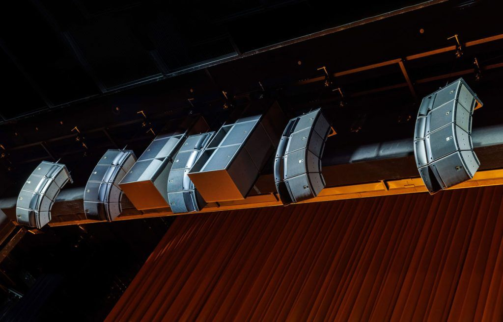
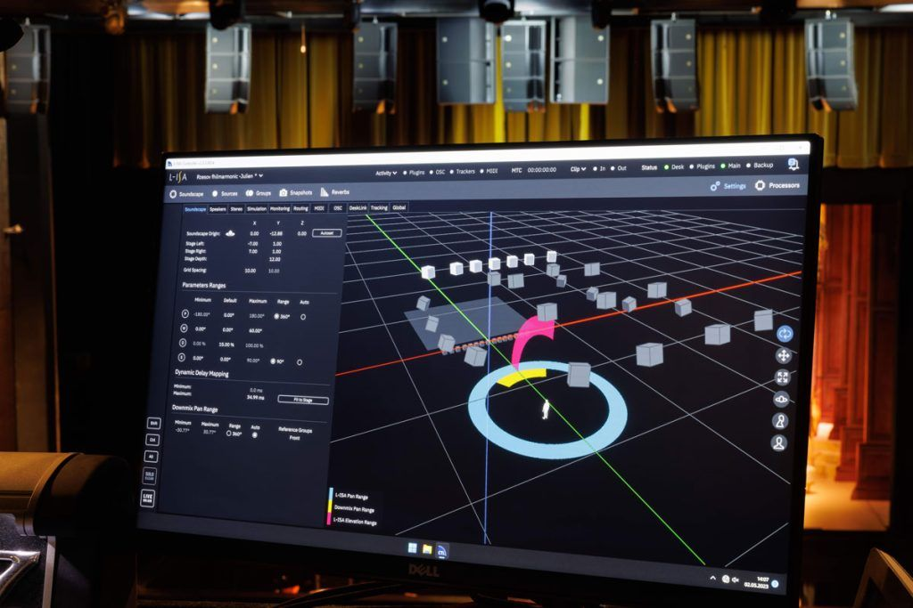
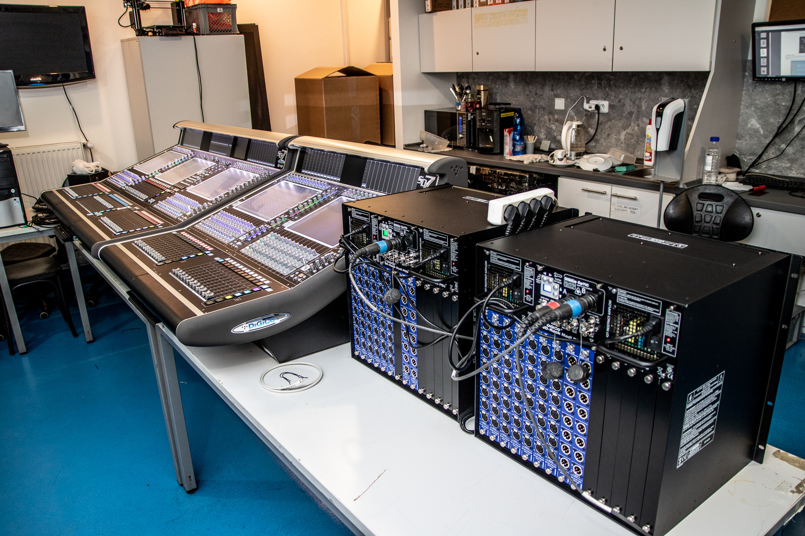
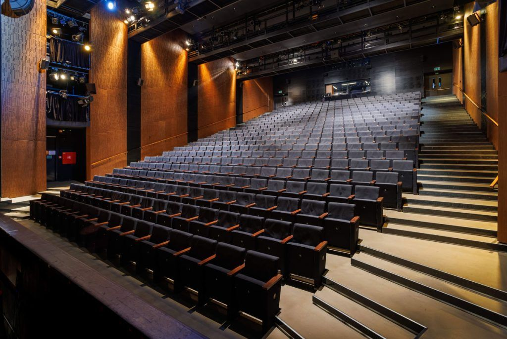
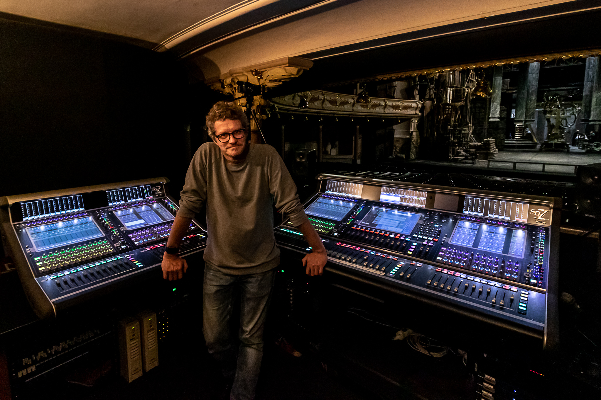
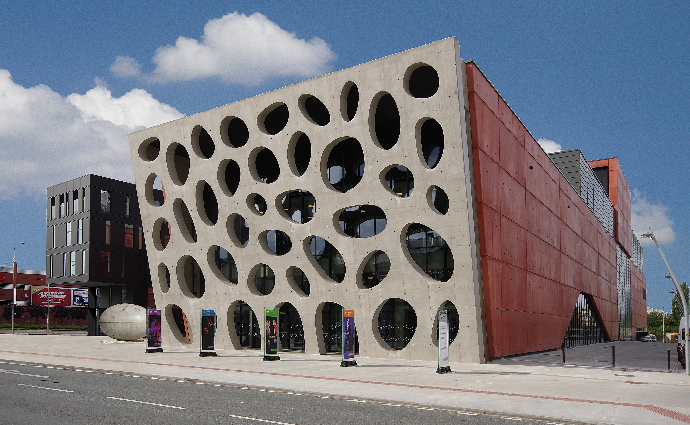

Sály, kde je
slyšet i šepot.
Srozumitelná řeč i plnokrevný koncert ve stejném prostoru. Navrhneme, postavíme a vyladíme ozvučení, osvětlení a jevištní techniku pro divadla, kulturní domy a koncertní sály — na klíč a s know-how, jak to dlouhodobě provozovat.
Co v sálech řešíme nejčastěji
Typické situace, se kterými za námi chodí provozovatelé a zřizovatelé kulturních prostor.
Dlouhý dozvuk, hluchá místa, šum z poslední řady. Mluvené slovo se ztrácí dřív, než dojde k divákovi.
Činohra, muzikál, koncert, konference i ples — každý formát chce jiný zvuk a jiné nasvícení ve stejném prostoru.
Dosluhující pulty, reproduktory a osvětlení bez náhradních dílů. Riziko výpadku uprostřed představení.
Sál „zní" špatně bez ohledu na techniku. Potřebujete akustické řešení, ne jen víc reproduktorů.
Techniku musí denně ovládat lidé v domě — bez závislosti na externím zvukaři u každé akce.
Veřejná zakázka, dotační titul, udržitelnost investice na 10+ let. Potřebujete podklady i jistotu.
Co dodáváme
Srozumitelnost i imerze — L-Acoustics
Liniové systémy L-Acoustics navržené přesně na geometrii sálu. Pro nejnáročnější scény imerzivní L-ISA a virtuální akustika L-Acoustics Ambiance, která promění akustiku prostoru bez stavebních zásahů.

L-ACOUSTICSKonzole, osvětlení a interkom
Mixážní pulty DiGiCo s divadelním softwarem (scény, postavy, redundance), jevištní osvětlení Ayrton a ChamSys, komunikace přes interkom ASL. Jedna platforma pro každodenní provoz.

DiGiCoJak to děláme — na klíč
Konzultace
Pochopíme provoz, dramaturgii a rozpočet.
Akustická studie & 3D
Měření a simulace v SoundVision.
Návrh
Projekt, specifikace, podklady pro zakázku.
Realizace
Dodávka a montáž, koordinace se stavbou.
Oživení & ladění
Naladění na míru sálu (Smaart) + školení obsluhy.
Servis & péče
Záruční i pozáruční podpora, dlouhodobě.
Reference — co se řešilo a jakou roli jsme měli

Nová scéna DJKT Plzeň
Role: dodávka & světová premiéra AmbianceVirtuální akustika L-Acoustics Ambiance — jeden sál zvládne činohru i operu bez stavebních úprav akustiky.
Případová studie
Hudební divadlo Karlín
Role: dodávka mixu DiGiCoQuantum 7T pro každovečerní muzikálový provoz — uložené scény, redundance, nulová tolerance výpadku.
Případová studie
UFFO Trutnov
Role: instalace L-ISAPrvní ostrá premiéra imerzivního L-ISA v ČR ve společenském centru — zvuk obklopující celé hlediště.
Případová studiePro jaké prostory
Proč PRO MUSIC pro kulturní prostory
Ne jen techniku — rozumíme dramaturgii, zkouškám i tomu, že show musí vyjít napoprvé.
Výhradní distributor L-Acoustics, DiGiCo a Ayrton pro ČR/SK — a lidé, kteří to umí nasadit a vyladit.
Vaši technici techniku skutečně ovládnou — vlastní tréninkové centrum a certifikace.
Podklady pro veřejné zakázky a dotační tituly, udržitelnost investice na 10+ let.
Záruční i pozáruční péče, náhradní díly, revize — aby to fungovalo i za pět let.
DJKT Plzeň, HD Karlín, UFFO Trutnov a desítky dalších scén po ČR i SK.
Časté otázky
Zvládneme realizaci během provozu sálu?
+Ano. Práce plánujeme do odstávek a prázdninových termínů, případně po etapách. Harmonogram navrhneme tak, aby zásah do provozu byl co nejmenší.
Pomůžete s dotací a veřejnou zakázkou?
+Připravíme technické podklady, specifikace a odhady pro dotační tituly i zadávací dokumentaci. Nejsme zadavatel, ale dáme vám vše, co k rozhodnutí a soutěži potřebujete.
Musíme vyměnit všechno najednou?
+Ne. Často navrhujeme etapizaci — začneme tím, co nejvíc pálí (např. ozvučení nebo pult), a navážeme dalšími kroky podle rozpočtu a sezóny.
Zaškolíte naše lidi?
+Ano. Součástí každé realizace je zaškolení obsluhy. Navíc nabízíme kurzy v PRO MUSIC Academy — od základů po certifikace L-Acoustics a DiGiCo.